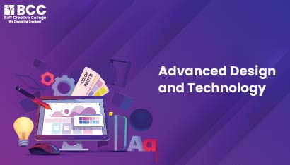
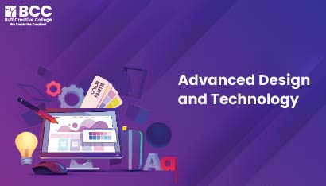

Buff Creative College
Ignite your creative career with Buff
Join Buff Creative College to elevate your artistic journey to refine your craft, and unlock endless possibilities for your creative future. We assist you in developing a job where you are not reliant on others. There is always time to discover new skills, no matter how old you are. You can take our courses while working. It's your adventure, so take up the mantle. As you begin your journey in the design industry, remember that creativity learns no boundaries, and the design field offers unlimited opportunities for innovation. Make sure you stay on top of emerging trends and technologies. Build a network of like-minded individuals, seek feedback from mentors, and share ideas with your team. Don't underestimate your abilities. Never stop learning.


 
